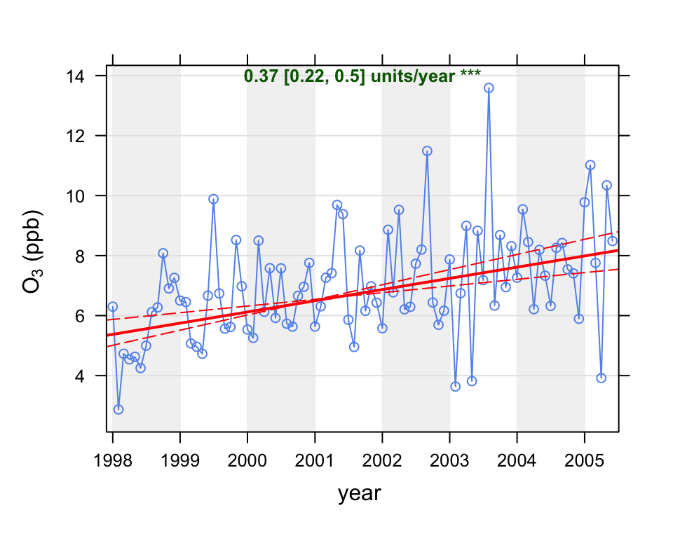
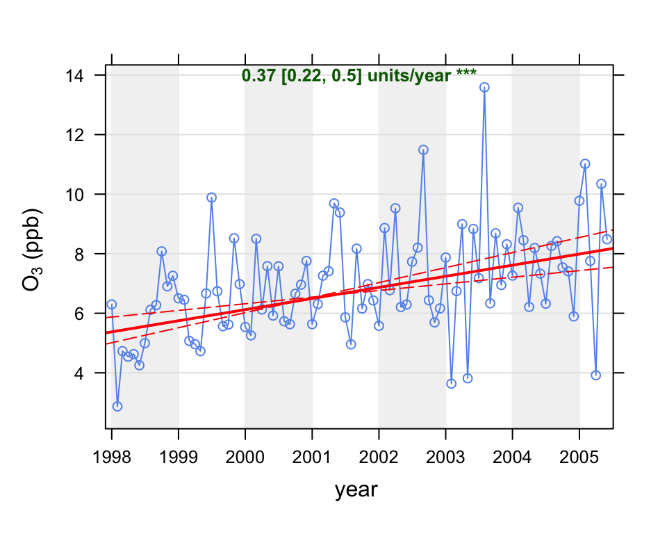
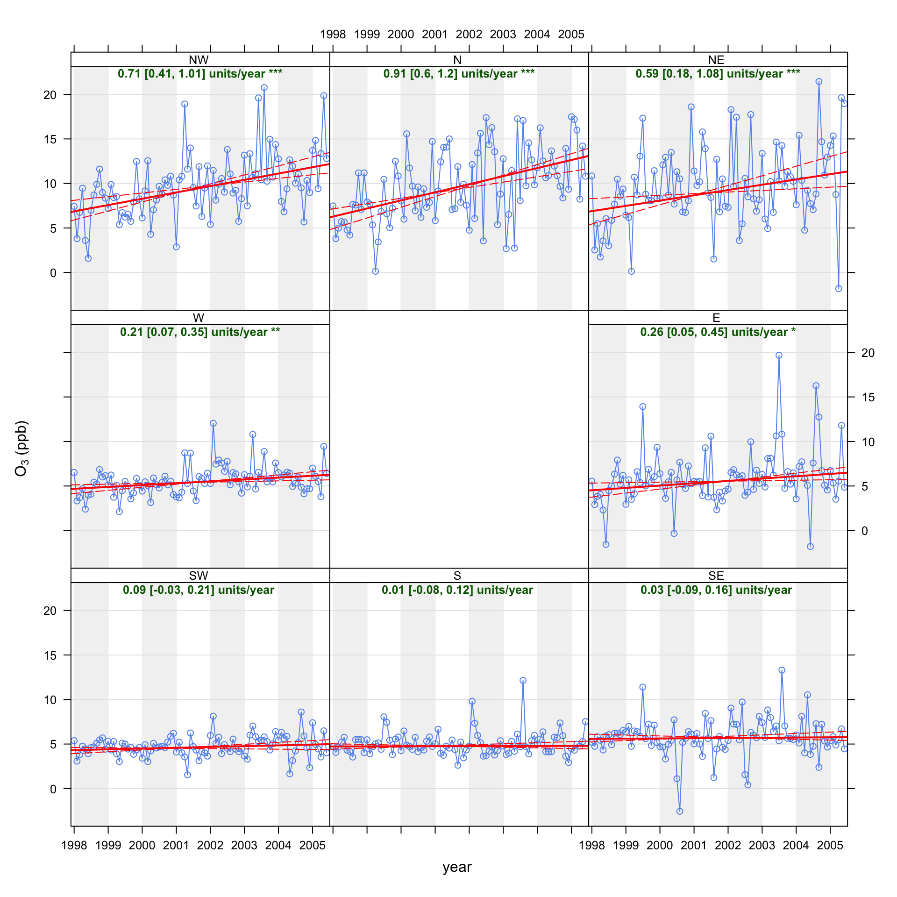

library(openair)
TheilSen(mydata, pollutant = "o3",
ylab = "ozone (ppb)",
deseason = TRUE,
date.format = "%Y")[1] "Taking bootstrap samples. Please wait."
Calculating trends for air pollutants is one of the most important and common tasks that can be undertaken. Trends are calculated for all sorts of reasons. Sometimes it is useful to have a general idea about how concentrations might have changed. On other occasions a more definitive analysis is required; for example, to establish statistically whether a trend is significant or not. The whole area of trend calculation is a complex one and frequently trends are calculated with little consideration as to their validity. Perhaps the most common approach is to apply linear regression and not think twice about it. However, there can be many pitfalls when using ordinary linear regression, such as the assumption of normality, autocorrelation etc.
One commonly used approach for trend calculation in studies of air pollution is the non-parametric Mann-Kendall approach (Hirsch, Slack, and Smith 1982). Wilcox (2010) provides an excellent case for using ‘modern methods’ for regression including the benefits of non-parametric approaches and bootstrap simulations. Note also that the all the regression parameters are estimated through bootstrap resampling.
The Theil-Sen method dates back to 1950, but the basic idea pre-dates 1950 (Theil 1950; Sen 1968). It is one of those methods that required the invention of fast computers to be practical. The basic idea is as follows. Given a set of \(n\) \(x\), \(y\) pairs, the slopes between all pairs of points are calculated. Note, the number of slopes can increase by \(\approx\) \(n^2\) so that the number of slopes can increase rapidly as the length of the data set increases. The Theil-Sen estimate of the slope is the median of all these slopes. The advantage of the using the Theil-Sen estimator is that it tends to yield accurate confidence intervals even with non-normal data and heteroscedasticity (non-constant error variance). It is also resistant to outliers — both characteristics can be important in air pollution. As previously mentioned, the estimates of these parameters can be made more robust through bootstrap-resampling, which further adds to the computational burden, but is not an issue for most time series which are expressed either as monthly or annual means. Bootstrap resampling also provides the estimate of \(p\) for the slope.
An issue that can be very important for time series is dependence or autocorrelation in the data. Normal (in the statistical sense) statistics assume that data are independent, but in time series this is rarely the case. The issue is that neighbouring data points are similar to one another (correlated) and therefore not independent. Ignoring this dependence would tend to give an overly optimistic impression of uncertainties. However, taking account of it is far from simple. A discussion of these issues is beyond the aims of this report and readers are referred to standard statistical texts on the issue. In openair we follow the suggestion of Kunsch (1989) of setting the block length to \(n^{1/3}\) where n is the length of the time series.
There is a temptation when considering trends to use all the available data. Why? Often it is useful to consider specific periods. For example, is there any evidence that concentrations of NOx have decreased since 2000? Clearly, the time period used depends on both the data and the questions, but it is good to be aware that considering subsets of data can be very insightful.
Another aspect is that almost all trends are shown as mean concentration versus time; typically by year. Such analyses are very useful for understanding how concentrations have changed through time and for comparison with air quality limits and regulations. However, if one is interested in understanding why trends are as they are, it can be helpful to consider how concentrations vary in other ways. The trend functions in openair do just this. Trends can be plotted by day of the week, month, hour of the day, by wind direction sector and by different wind speed ranges. All these capabilities are easy to use and their effectiveness will depend on the situation in question. One of the reasons that trends are not considered in these many different ways is that there can be a considerable overhead in carrying out the analysis, which is avoided by using these functions. Few, for example, would consider a detailed trend analysis by hour of the day, ensuring that robust statistical methods were used and uncertainties calculated. However, it can be useful to consider how concentrations vary in this way. It may be, for example, that the hours around midday are dominated by heavy vehicle emissions rather than by cars — so is the trend for a pollutant different for those hours compared with say, hours dominated by other vehicle types? Similarly, a much more focussed trend analysis can be done by considering different wind direction, as this can help isolate different source influences.
The TheilSen function is typically used to determine trends in pollutant concentrations over several years. However, it can be used to calculate the trend in any numeric variable. It calculates monthly mean values from daily, hourly or higher time resolution data, as well as working directly with monthly means. Whether it is meaningful to calculate trends over shorter periods of time (e.g. 2 years) depends very much on the data. It may well be that statistically significant trends can be detected over relatively short periods but it is another matter whether it matters. Because seasonal effects can be important for monthly data, there is the option to deseasonalise the data first. The timeVariation function are both useful to determine whether there is a seasonal cycle that should be removed.
Note also that the symbols shown next to each trend estimate relate to how statistically significant the trend estimate is: \(p\) \(<\) 0.001 = \(\ast\ast\ast\), \(p\) \(<\) 0.01 = \(\ast\ast\), \(p\) \(<\) 0.05 = \(\ast\) and \(p\) \(<\) 0.1 = \(+\).
We first show the use of the TheilSen function by applying it to concentrations of O3. The function is called as shown in Figure 16.1.
The plot shows the deseasonalised monthly mean concentrations of O3. The solid red line shows the trend estimate and the dashed red lines show the 95% confidence intervals for the trend based on resampling methods. The overall trend is shown at the top-left as 0.38 (ppb) per year and the 95% confidence intervals in the slope from 0.21–0.51 ppb/year. The \(\ast\ast\ast\) show that the trend is significant to the 0.001 level.
library(openair)
TheilSen(mydata, pollutant = "o3",
ylab = "ozone (ppb)",
deseason = TRUE,
date.format = "%Y")[1] "Taking bootstrap samples. Please wait."
Because the function runs simulations to estimate the uncertainty in the slope, it can take a little time for all the calculations to finish. These printed results show that in this case the trend in O3 was +0.38 units (i.e. ppb) per year as an average over the entire period. It also shows the 95% confidence intervals in the trend ranged between 0.21 to 0.51 ppb/year. Finally, the significance level in this case is very high; providing very strong evidence that concentrations of O3 increased over the period. The plot together with the summary results is shown in Figure 16.1. Note that if one wanted to display the confidence intervals in the slope at the 99% confidence intervals, the code would be Figure 16.2.
TheilSen(mydata, pollutant = "o3", ylab = "ozone (ppb)", alpha = 0.01)Sometimes it is useful to consider a subset of data, perhaps by excluding some years. This is easy with the filter function. The following code calculates trends for years greater than 1999 i.e. from 2000 onward.
It is also possible to calculate trends in many other ways e.g. by wind direction. Considering how trends vary by wind direction can be extremely useful because the influence of different sources invariably depends on the direction of the wind. The TheilSen function splits the wind direction into 8 sectors i.e. N, NE, E etc. The Theil-Sen slopes are then calculated for each direction in turn. This function takes rather longer to run because the simulations need to be run eight times in total. Considering concentrations of O3 again, the output is shown in Figure 16.2. Note that this plot is specifically laid out to assist interpretation, with each panel located at the correct point on the compass. This makes it easy to see immediately that there is essentially no trend in O3 for southerly winds i.e. where the road itself has the strongest influence. On the other hand the strongest evidence of increasing O3 are for northerly winds, where the influence of the road is much less. The reason that there is no trend in O3 for southerly winds is that there is always a great excess of NO, which reacts with O3 to form NO2. At this particular location it will probably take many more years before O3 concentrations start to increase when the wind direction is southerly. Nevertheless, there will always be some hours that do not have such high concentrations of NO.
TheilSen(mydata, pollutant = "o3", type = "wd",
deseason = TRUE,
date.format = "%Y",
ylab = "ozone (ppb)")[1] "Taking bootstrap samples. Please wait."
[1] "Taking bootstrap samples. Please wait."
[1] "Taking bootstrap samples. Please wait."
[1] "Taking bootstrap samples. Please wait."
[1] "Taking bootstrap samples. Please wait."
[1] "Taking bootstrap samples. Please wait."
[1] "Taking bootstrap samples. Please wait."
[1] "Taking bootstrap samples. Please wait."
TheilSen function will automatically organise the separate panels by the different compass directions.The option slope.percent can be set to express slope estimates as a percentage change per year. This is useful for comparing slopes for sites with very different concentration levels and for comparison with emission inventories. The percentage change uses the concentration at the beginning and end months to express the mean slope.
The trend, \(T\) is defined as:
\[ T [\%.yr^{-1}] = 100.\left(\frac{C_{End}}{C_{Start}} - 1\right)\Bigg /N_{years} (\#eq:MannK) \]
where \(C_{End}\) and \(C_{Start}\) are the mean concentrations for the end and start date, respectfully. \(N_{years}\) is the number of years (or fractions of) the time series spans.
TheilSen(mydata, pollutant = "o3", deseason = TRUE,
slope.percent = TRUE)Sometimes considering percentages can be misleading. A specific case to look out for is when the uncertainties in the slope are wide and go from a negative concentration to a positive, which is problematic. In this case it is best to stick with changes in absolute concentrations.
The TheilSen function was written to work with hourly data, which is then averaged into monthly or annual data. However, it is realised that users may already have data that is monthly or annual. The function can therefore accept as input monthly or annual data directly. However, it is necessary to ensure the date field is in the correct format. Assuming data in an Excel file in the format dd/mm/YYYY (e.g. 23/11/2008), it is necessary to convert this to a date format understood by R, as shown below. Similarly, if annual data were available, get the dates in formats like ‘2005-01-01’, ‘2006-01-01’ … and make sure the date is again formatted using as.Date. Note that if dates are pre-formatted as YYYY-mm-dd, then it is sufficient to use as.Date without providing any format information because it is already in the correct format.
mydata$date = as.Date(mydata$date, format = "%d/%m/%Y")Finally, the TheilSen function can consider trends at different sites, provided the input data are correctly formatted. For input, a data frame with three columns is required: date, pollutant and site. The call would then be, for example:
TheilSen(mydata, pollutant = "no2", type = "site")The TheilSen function provides lots of output data for further analysis or adding to a report. To obtain it, it is necessary to read it into a variable:
MKresults <- TheilSen(mydata,
pollutant = "o3",
deseason = TRUE,
type = "wd")[1] "Taking bootstrap samples. Please wait."
[1] "Taking bootstrap samples. Please wait."
[1] "Taking bootstrap samples. Please wait."
[1] "Taking bootstrap samples. Please wait."
[1] "Taking bootstrap samples. Please wait."
[1] "Taking bootstrap samples. Please wait."
[1] "Taking bootstrap samples. Please wait."
[1] "Taking bootstrap samples. Please wait."This returns a list of two data frames containing all the monthly mean values and trend statistics and an aggregated summary. The first 6 lines are shown next:
head(MKresults$data[[1]]) wd date conc a b upper.a upper.b lower.a
1 E 1998-01-01 5.552255 -2.825018 0.0007185139 -8.826644 0.001230108 3.848277
2 E 1998-02-01 2.919638 -2.825018 0.0007185139 -8.826644 0.001230108 3.848277
3 E 1998-03-01 3.849364 -2.825018 0.0007185139 -8.826644 0.001230108 3.848277
4 E 1998-04-01 4.051669 -2.825018 0.0007185139 -8.826644 0.001230108 3.848277
5 E 1998-05-01 2.304685 -2.825018 0.0007185139 -8.826644 0.001230108 3.848277
6 E 1998-06-01 -1.560437 -2.825018 0.0007185139 -8.826644 0.001230108 3.848277
lower.b p p.stars slope intercept intercept.lower
1 0.0001449689 0.01669449 * 0.2622576 -2.825018 3.848277
2 0.0001449689 0.01669449 * 0.2622576 -2.825018 3.848277
3 0.0001449689 0.01669449 * 0.2622576 -2.825018 3.848277
4 0.0001449689 0.01669449 * 0.2622576 -2.825018 3.848277
5 0.0001449689 0.01669449 * 0.2622576 -2.825018 3.848277
6 0.0001449689 0.01669449 * 0.2622576 -2.825018 3.848277
intercept.upper lower upper slope.percent lower.percent
1 -8.826644 0.05291365 0.4489894 5.798024 0.9925886
2 -8.826644 0.05291365 0.4489894 5.798024 0.9925886
3 -8.826644 0.05291365 0.4489894 5.798024 0.9925886
4 -8.826644 0.05291365 0.4489894 5.798024 0.9925886
5 -8.826644 0.05291365 0.4489894 5.798024 0.9925886
6 -8.826644 0.05291365 0.4489894 5.798024 0.9925886
upper.percent
1 11.96135
2 11.96135
3 11.96135
4 11.96135
5 11.96135
6 11.96135Often only the trend statistics are required and not all the monthly values. These can be obtained by:
MKresults$data[[2]] wd p.stars date conc a b upper.a
1 E * 2001-09-15 5.989974 -2.825018 7.185139e-04 -8.8266445
2 N *** 2001-09-15 9.786267 -19.142101 2.485907e-03 -28.7157811
3 NE *** 2001-09-15 9.728994 -9.728230 1.624926e-03 -24.8702213
4 NW *** 2001-09-15 9.785862 -12.953955 1.938155e-03 -22.4189130
5 S 2001-09-15 5.052729 4.472597 2.509278e-05 1.0745158
6 SE 2001-09-15 5.780644 4.822710 7.357566e-05 0.8230454
7 SW 2001-09-15 4.761100 1.818338 2.444785e-04 -1.9192684
8 W ** 2001-09-15 5.618710 -1.179040 5.736252e-04 -5.6097531
upper.b lower.a lower.b p slope intercept
1 0.0012301079 3.848277 1.449689e-04 0.016694491 0.262257566 -2.825018
2 0.0032893253 -9.725531 1.649014e-03 0.000000000 0.907355926 -19.142101
3 0.0029640565 3.185675 5.003905e-04 0.000000000 0.593097968 -9.728230
4 0.0027688783 -3.377315 1.123129e-03 0.000000000 0.707426586 -12.953955
5 0.0003281524 7.157070 -2.081446e-04 0.868113523 0.009158865 4.472597
6 0.0004318445 8.727037 -2.572925e-04 0.684474124 0.026855115 4.822710
7 0.0005716588 5.538209 -8.999935e-05 0.110183639 0.089234663 1.818338
8 0.0009552742 3.039959 2.044476e-04 0.003338898 0.209373207 -1.179040
intercept.lower intercept.upper lower upper slope.percent
1 3.848277 -8.8266445 0.05291365 0.4489894 5.7980241
2 -9.725531 -28.7157811 0.60188995 1.2006037 14.4454294
3 3.185675 -24.8702213 0.18264253 1.0818806 8.6082382
4 -3.377315 -22.4189130 0.40994205 1.0106406 10.3009943
5 7.157070 1.0745158 -0.07597279 0.1197756 0.1936654
6 8.727037 0.8230454 -0.09391175 0.1576232 0.4816915
7 5.538209 -1.9192684 -0.03284976 0.2086555 2.0662774
8 3.039959 -5.6097531 0.07462338 0.3486751 4.4667001
lower.percent upper.percent
1 0.9925886 11.961348
2 8.4310939 24.381954
3 2.1996728 19.875875
4 5.0554430 17.134132
5 -1.5108817 2.703415
6 -1.5406212 3.008353
7 -0.7113748 5.313239
8 1.4544073 8.381943In the results above the lower and upper fields provide the 95% (or chosen confidence interval using the alpha option) of the trend and slope is the trend estimate expressed in units/year.